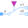
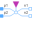

PositivePinPositive quasi-static single-phase pin |
Information
This information is part of the Modelica Standard Library maintained by the Modelica Association.
The positive pin is based on Pin. Additionally the reference angle is specified in the connector. The time derivative of the reference angle is the actual angular velocity of the quasi stationary voltage and current. The symbol is also designed such way to look different than the negative pin.
See also
Components (3)
| v |
Type: ComplexElectricPotential Description: Complex potential at the quasi-static single-phase pin |
|
|---|---|---|
| i |
Type: ComplexCurrent Description: Complex current flowing into the quasi-static single-phase pin |
|
| reference |
Type: Reference Description: Reference |
Used in Components (12)
|
Modelica.Electrical.QuasiStationary.SinglePhase.Basic
Electrical ground |
|
|  |
Modelica.Electrical.QuasiStationary.SinglePhase.Ideal
Ideal commuting switch |
|  |
Modelica.Electrical.QuasiStationary.SinglePhase.Ideal
Ideal intermediate switch |
|
Modelica.Electrical.QuasiStationary.SinglePhase.Ideal
Ideal transformer |
|
|
Modelica.Electrical.QuasiStationary.SinglePhase.Sensors
Power sensor |
|
|
Modelica.Electrical.QuasiStationary.SinglePhase.Sensors
Sensor to measure current, voltage and power |
|
|
Modelica.Electrical.QuasiStationary.SinglePhase.Interfaces
Two pins |
|
|
Modelica.Electrical.QuasiStationary.SinglePhase.Interfaces
Partial potential sensor |
|
|
Modelica.Electrical.QuasiStationary.SinglePhase.Utilities
Ideal AC DC converter |
|
|
Modelica.Electrical.QuasiStationary.MultiPhase.Basic
Connect one (positive) pin |
|
|
Modelica.Electrical.QuasiStationary.MultiPhase.Basic
Connect all (positive) pins |
|
|
Modelica.Magnetic.QuasiStatic.FluxTubes.Basic
Electro-magnetic energy conversion |